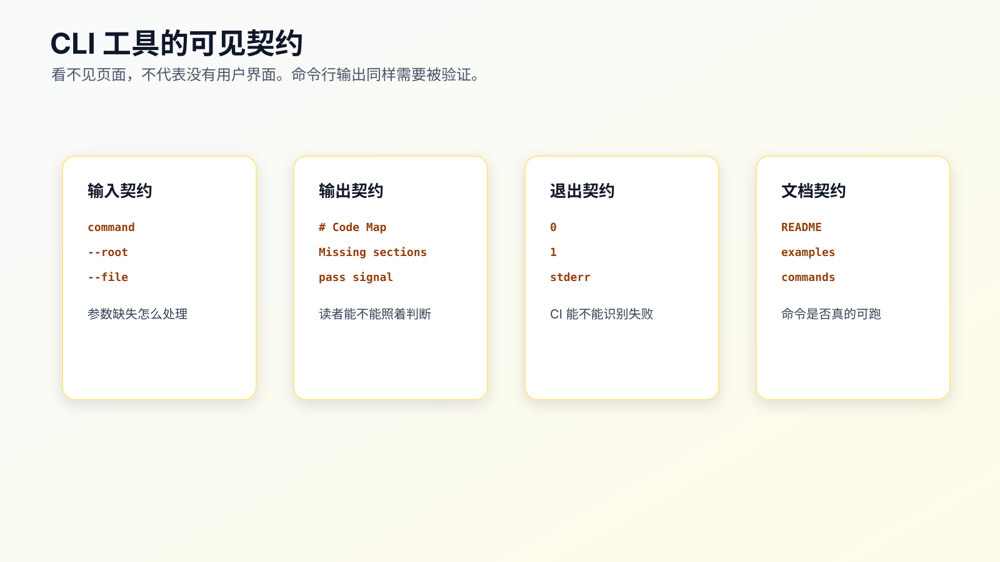
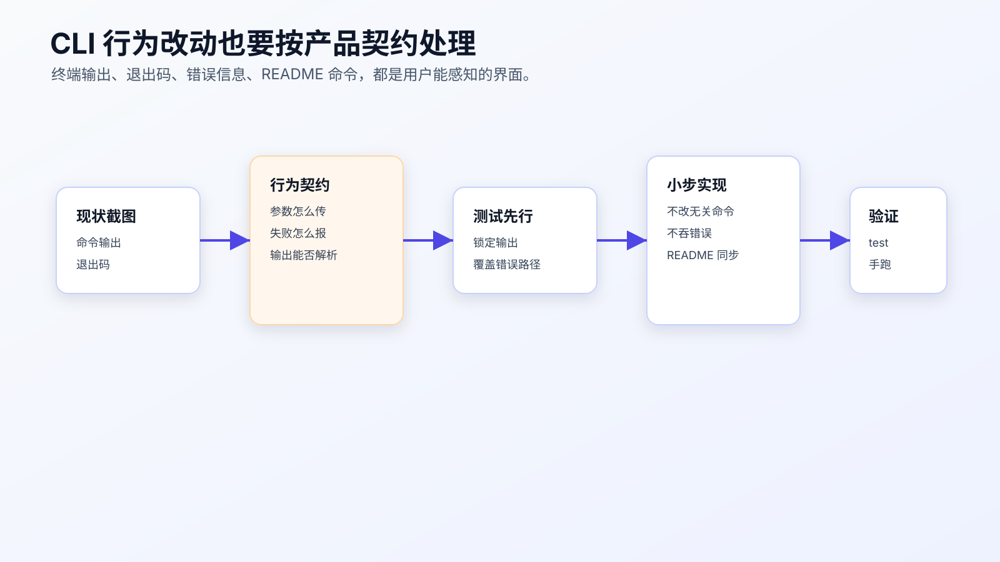

模块实战：用 AI 完成一次 CLI 交互改造
CLI 交互改造看起来像改输出文案，实际是在改用户可见合同。
真实项目里的 CLI 经常被人、脚本、CI、Git hooks 或 README 复制命令调用。这个合同至少包括：
stdout
stderr
exit code
README 示例命令
这几个面任何一个漂移，都会让“测试通过”的改动变成真实用户路径上的问题。
配套代码仓库 DavidDingXu/learn-ai-coding 按一个大仓库组织，仓库根目录下有业务 module 和工具 module。这里用工具 module：ai-coding-workflow-kit。它适合承载 CLI 合同、验证记录和只读工具边界这类工作流样例，不替代综合业务实战。
这一篇复盘 ai-coding-workflow-kit 的一次 CLI 合同改造。过程记录在：
learn-ai-coding/ai-coding-workflow-kit/dev-process/02-cli-contract-change.md
对应真实需求是：
未知命令必须失败并输出可读命令列表。
verify-ledger 缺少 --file 必须失败。
verify-ledger 校验失败时 exit code 必须为 1。
README 中的命令必须引用仓库里真实存在的文件。
重点不是证明 node src/cli.js unknown 能跑，而是看 AI 如何围绕 CLI 合同做一个可审的小 diff。

先把任务写成合同
过程记录里的任务卡先限定目标：
补齐 CLI 用户可见交互合同，保证 stdout、stderr、exit code 和 README 示例可验证。
范围也写得很窄：
src/cli.js
test/cli.test.js
README.md
非目标更关键：
不引入 commander/yargs。
不重做 CLI 架构。
不改变成功命令的 Markdown 输出格式。
不修改 lib 层业务函数。
如果没有这些非目标，AI 很可能把“补错误路径测试”扩大成“升级 CLI 框架”。那不是这次需求。
CLI 改造最容易出问题的地方，就是把用户可见行为当成内部实现细节。
先测进程边界，不先改实现
库函数测试不能证明 CLI 合同。
例如 validateLedgerFile() 返回错误，不等于命令行进程会：
把错误写到 stderr。
返回非 0 exit code。
保持 stdout 为空。
所以这次先补进程级测试：
test/cli.test.js
测试方式是用 Node 内置能力启动真实 CLI：
import { spawnSync } from 'node:child_process';
function runCli(args) {
return spawnSync('node', ['src/cli.js', ...args], {
cwd: new URL('..', import.meta.url),
encoding: 'utf8'
});
}
这段测试比直接调用函数更慢一点，但它测到的是用户真正会遇到的边界。
本次覆盖三条路径：
unknown command -> stderr + non-zero exit code
verify-ledger without --file -> stderr + non-zero exit code
failing ledger -> non-zero exit code
对 CLI 来说，这些就是行为合同。
实现只允许小 diff
当前 CLI 入口在：
learn-ai-coding/ai-coding-workflow-kit/src/cli.js
实现保持手写分发，不引入新框架：
codemap
context-audit
task-context
context-pack
verify-ledger
unknown command
未知命令走 stderr：
Unknown command: <name>
Commands: codemap, context-audit, task-context, context-pack, verify-ledger
缺少 --file 也走 stderr：
--file is required
这次不改变成功命令的 Markdown 输出。原因很简单：成功输出可能已经被人复制、被文档引用、被其他脚本消费。目标是补齐错误路径证据，不是重新设计 CLI。
README 也是用户路径
这次还有一个真实问题：README 里的 verify-ledger 示例必须指向仓库里存在的文件。
过程记录要求 README 使用：
examples/verification-ledger.pass.md
examples/verification-ledger.fail.md
如果 README 写的是不存在的 verification-ledger.md，测试可能仍然全绿，但读者复制命令就会失败。
所以 CLI 合同不只在 src/cli.js。它还包括：
README 里的命令是否能运行。
examples 文件是否真实存在。
失败示例是否返回非 0。
这就是为什么实战不能停在“跑一下命令”。命令只是验证点之一，真正的需求是让用户路径稳定。

给 AI 的执行指令
让 AI 做这类改动时，不要写：
优化一下 CLI 错误提示。
应该写成：
请先读取：
- learn-ai-coding/ai-coding-workflow-kit/dev-process/02-cli-contract-change.md
- learn-ai-coding/ai-coding-workflow-kit/src/cli.js
- learn-ai-coding/ai-coding-workflow-kit/test/cli.test.js
- learn-ai-coding/ai-coding-workflow-kit/README.md
- learn-ai-coding/ai-coding-workflow-kit/examples/
只处理 CLI 用户可见合同：
1. 未知命令必须 stderr 输出可读命令列表，并返回非 0。
2. verify-ledger 缺少 --file 必须 stderr 输出错误，并返回非 0。
3. 失败 ledger 必须返回非 0。
4. README 命令必须引用真实 examples 文件。
不要引入 CLI 框架。
不要改变成功命令的 Markdown 输出格式。
不要修改 lib 层函数。
先补进程级测试，再做最小实现。
完成后运行 npm test，并手动执行三条 CLI 命令。
这段指令把任务压回了真实需求：用户可见合同。
Review 要看四个面
审查这次 diff 时，不要只看测试文件有没有新增。
要逐项检查：
stdout：成功输出是否保持不变？
stderr：错误信息是否写到 stderr？
exit code：失败路径是否非 0？
README：示例命令是否真实可运行？
还要看 scope：
是否只改 src/cli.js、test/cli.test.js、README.md？
是否引入了新依赖？
是否改了 lib 层业务函数？
是否把帮助信息复制到多个地方导致未来漂移？
如果 AI 为了“体验更好”改了成功 Markdown 输出，即使测试通过，也要退回。因为这已经超过本次合同改造。
验证：自动测试加手动命令
自动测试：
cd learn-ai-coding/ai-coding-workflow-kit
npm test
当前结果应为：
tests 12
pass 12
fail 0
手动命令：
node src/cli.js unknown
node src/cli.js verify-ledger
node src/cli.js verify-ledger --file examples/verification-ledger.pass.md
node src/cli.js verify-ledger --file examples/verification-ledger.fail.md
检查点不是“有没有输出”，而是：
unknown 是否非 0。
unknown 是否只写 stderr。
缺 --file 是否非 0。
pass ledger 是否返回 0。
fail ledger 是否返回 1。
README 示例是否能复制执行。
命令输出是证据，不是实战主体。实战主体是：任务卡、TDD、最小实现、review checklist、验证和残余风险。
残余风险要写出来
过程记录没有把任务说成“完美解决”。
它保留了两个残余风险：
README 命令没有单独文档测试，只靠人工命令复核。
CLI 当前仍是手写 parser，后续命令增多时要重新评估是否需要框架。
这类记录很重要。
真实项目里，完成不是把所有风险消灭，而是清楚哪些风险已经被测试覆盖，哪些风险只是人工复核，哪些风险留到后续任务。
迁移到你的项目
只要你的 CLI、脚本或命令行工具被人复制使用，就可以套这个流程。
先列合同面：
命令名。
参数。
stdout。
stderr。
exit code。
README 或文档示例。
脚本调用方。
再写测试策略：
库函数测试覆盖业务逻辑。
进程级测试覆盖真实 CLI 行为。
README 命令至少人工抽查，关键项目可以加文档命令测试。
最后限制 AI：
只修当前合同。
不重构 CLI 框架。
不改变成功输出格式。
不删除失败路径测试。
完成前必须报告 stdout/stderr/exit code。
CLI 是文本界面。文本就是协议。
常见错误
错误一：只测函数，不测进程。
函数测试通过，不代表 stderr、exit code 和参数解析都对。
错误二：把 README 当文档，不当用户路径。
README 命令不可运行，就是用户路径失败。
错误三：顺手换 CLI 框架。
除非需求就是框架迁移，否则这会把一个小合同修复变成大风险改造。
错误四：只断言包含某个词。
CLI 测试要覆盖 stdout/stderr/exit code，不只是字符串包含。
错误五：没有记录残余风险。
README 命令是否有自动化测试、是否有外部脚本调用方，这些都应该写清楚。
可复查资料
- CLI 合同改造过程记录：
learn-ai-coding/ai-coding-workflow-kit/dev-process/02-cli-contract-change.md - CLI 入口：
learn-ai-coding/ai-coding-workflow-kit/src/cli.js - CLI 进程级测试：
learn-ai-coding/ai-coding-workflow-kit/test/cli.test.js - README 示例命令：
learn-ai-coding/ai-coding-workflow-kit/README.md - 验证记录样例：
learn-ai-coding/ai-coding-workflow-kit/examples/ - OpenSpec 变更记录：
learn-ai-coding/ai-coding-workflow-kit/openspec/changes/cli-contract-tests/